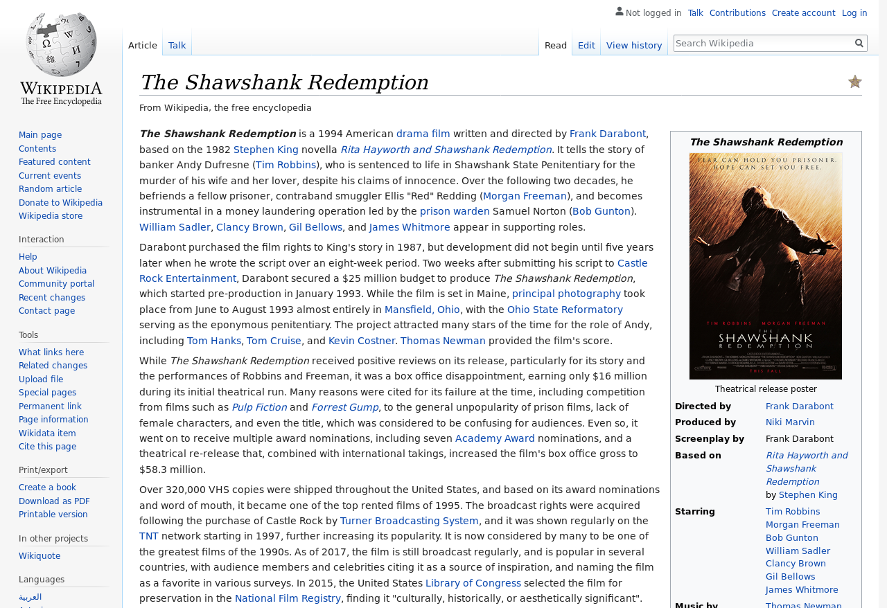
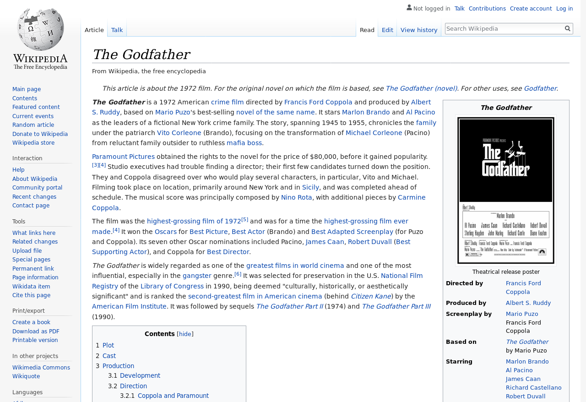
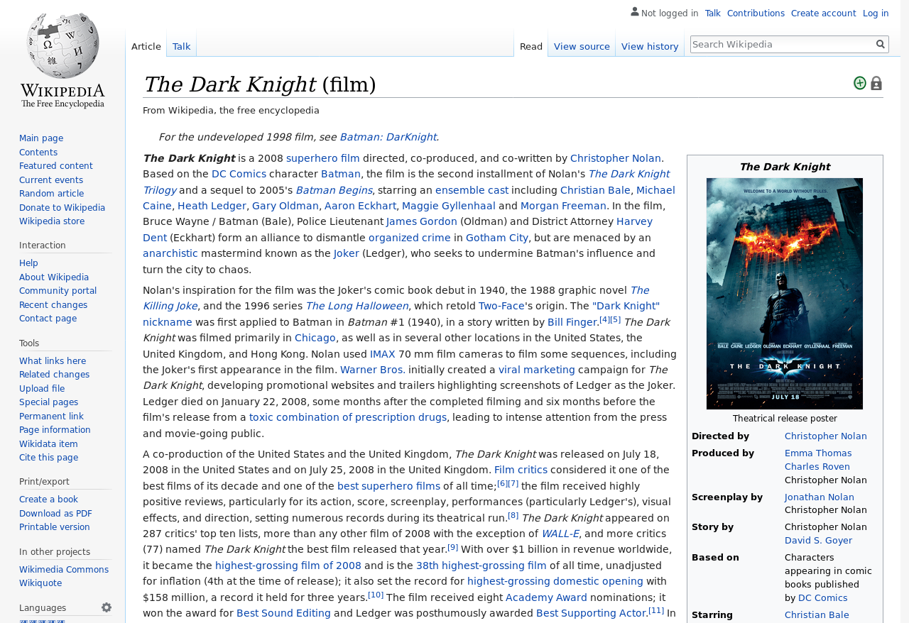
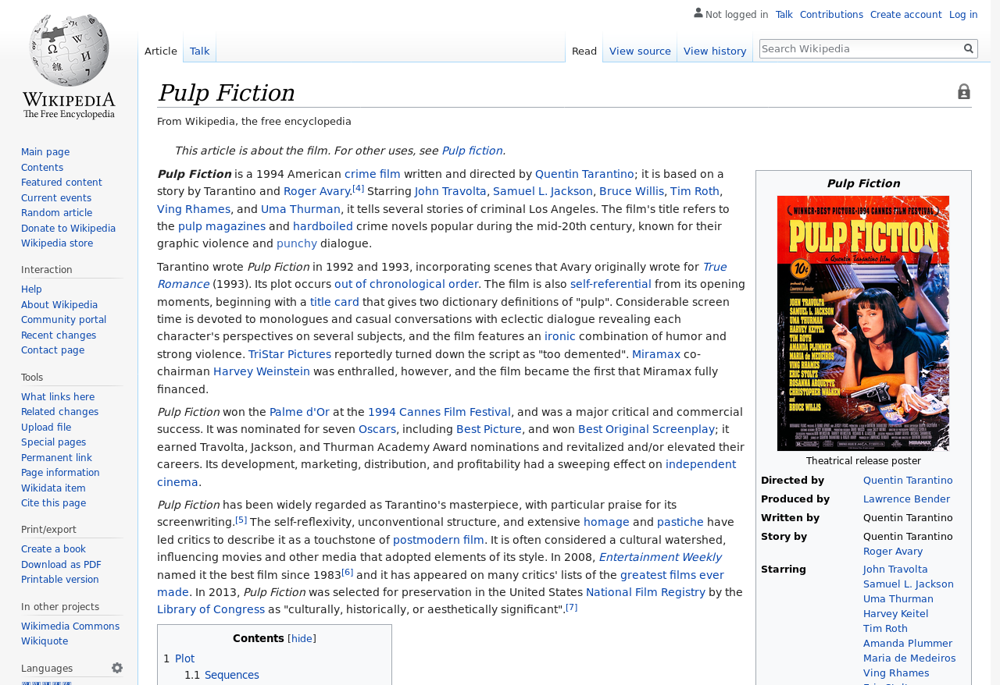

Test Suite: Run Test Suite to Assert IMDB - WIKI director names
| 04/24/19 14:23:51 | MovieInfo | Movie Name | wikiUrl | Wiki Director Name | imdb Director Name | imdb Url | Mode | Device |
| 04/24/19 14:24:13 | | movieName=The Shawshank Redemption, | wikiUrl=https://en.wikipedia.org/wiki/The_Shawshank_Redemption, | wikiDirectorName=[Frank Darabont], | imdbDirectorName=[Frank Darabont], | imdbUrl=https://www.imdb.com/title/tt0111161/, | mode=GUI, | device=REMOTEFIREFOX |
| 04/24/19 14:24:14 | | movieName=The Godfather, | wikiUrl=https://en.wikipedia.org/wiki/The_Godfather, | wikiDirectorName=[Francis Ford Coppola], | imdbDirectorName=[Francis Ford Coppola], | imdbUrl=https://www.imdb.com/title/tt0068646/, | mode=GUI, | device=REMOTEFIREFOX |
| 04/24/19 14:24:15 | | movieName=The Dark Knight, | wikiUrl=https://en.wikipedia.org/wiki/The_Dark_Knight_(film), | wikiDirectorName=[Christopher Nolan], | imdbDirectorName=[Christopher Nolan], | imdbUrl=https://www.imdb.com/title/tt0468569/, | mode=GUI, | device=REMOTEFIREFOX |
| 04/24/19 14:24:15 | | movieName=Pulp Fiction, | wikiUrl=https://en.wikipedia.org/wiki/Pulp_Fiction, | wikiDirectorName=[Quentin Tarantino], | imdbDirectorName=[Quentin Tarantino], | imdbUrl=https://www.imdb.com/title/tt0110912/, | mode=GUI, | device=REMOTEFIREFOX |
{kind=link}
{kind=link}
{kind=link}
{kind=link}